Shoutouts
Shoutout to “The Fisherwoman” for finishing her long await song collab on Milton Friedman; a gentleman responsible for a Shareholder primacy which has had a lot of unfortunate downstream impacts on todays Economic climate. If you want to learn more about a man who towers over Economics (for worse) in impact since clearly not in stature I highly recommend you all look here https://www.youtube.com/watch?v=aMX-fllnmM8
Monday
After I finished imprinting if statements I went to a bar to go watch the Valkyries game with “Let me give you a call on the world's smallest phone” and some other folks from the Mission run club.
It’s game 5 vs the Atlanta team and the whole bar was in fervor supporting our favorite WNBA team. Well the whole bar except for me that is.
Sure I wanted them to win but I can't say I was all that enthusiastic. I’ve never been a huge sports guy and now wasn’t when that was changing. Don’t get me wrong the game was certainly fun to watch but I guess it feels hard for me to take too much pride when I didn’t really do anything or have any close friends on the team. Like if “The Fisherwoman” or “The Yogi” were playing I’d be rooting for them like crazy, but Tiffany of the Valkyries isn’t a good friend so I can’t say I’m too attached to her winning.
I found it especially interesting when one of the guys I was watching with was outraged that the next game got moved to a Thursday morning due to some scheduling issues meaning he’d have to take some time off work to go to a bar to see the end of the game. If I’m lucky I may remember to look up the score but I jusr can’t say I’m that into it.
Maybe it’s some sense of connection to everyone who is a fan, but picking a sports team feels arbitrary to me in a way I don’t really get. I kinda wish I did though.
Tuesday
Once I was absolutely sure I checked in all the code and locked the door to keep out the code wolves I went to the last Spikeball of the season with “The Spikeballer “ “Aquaman,” “This guy doesn’t get passed over,” “The French scout,” and a bunch of the other spike group.
Unfortunately day light savings is looming so we need to spike today while we still can. I had one of my better showings today actually being able to win a game 11-6 which was awesome.
After spike we went back to”This guy doesn’t get passed over’s” place for a BBQ. “Aquaman” gave a challenge that within an hour we all had to pay “This guy doesn’t get passed over” a compliment without him realizing the challenge. I had a conversation with him about grilled vegetables and ended saying I could tell he’s really into cooking based on how he seasoned them which he said he really appreciated.
Wednesday
Ok munchkins before we get to our regularly scheduled content I want you all to take a moment and fill out a google form. Why? Well we will get to
that once you do it.
Thank you all for your participation in science!
Are you sure you filled it out before reading on? Really sure? Well ok I trust ya I know you wouldn’t lie to me :)
To give you all some context now I was debating with some people whether my 24 hour walk and air purifier run was uncool or cool. I was told I would have to stop doing that if I wanted to find a partner.
I was told rather adamantly that these things are an instant dealbreaker for the potential recklessness of it all and that I have to stop. Originally I was going to have an air purifier run club for the fun of it but I decided to cancel; if finding someone really is my priority I have to act like it and while I’m definitely down for side quests, if they actively interfere with my main goal I can’t do them anymore.
However I want to know what everyone else thinks. One thing I’ve learned throughout the process is not everyone has the same opinions on all my bits and quirks so I hoped consolidating larger opinion on the two bits above would be informative.
Now that the poll is done I also want to get on a bit of a personal tangent with regards to these two bits. To be honest it isn’t as though those two bits in particular are important to me, but I very much dislike having to give up something that I don’t think is intrinsically bad. Ok the other hand I’m not opposed to day fashion or gyming(the latter of which I actually have my own separate goals for that are separate of dating). I personally think the world can use more whimsy and we don’t give ourselfes enough permission to just let loose and have fun. We do this sometimes but why not do it more. That being said if this truly is a dealbreaker then I may need to rethink.
I was also presented with this chart of different activity based on how cool and uncool they are vs how weird and normal they are
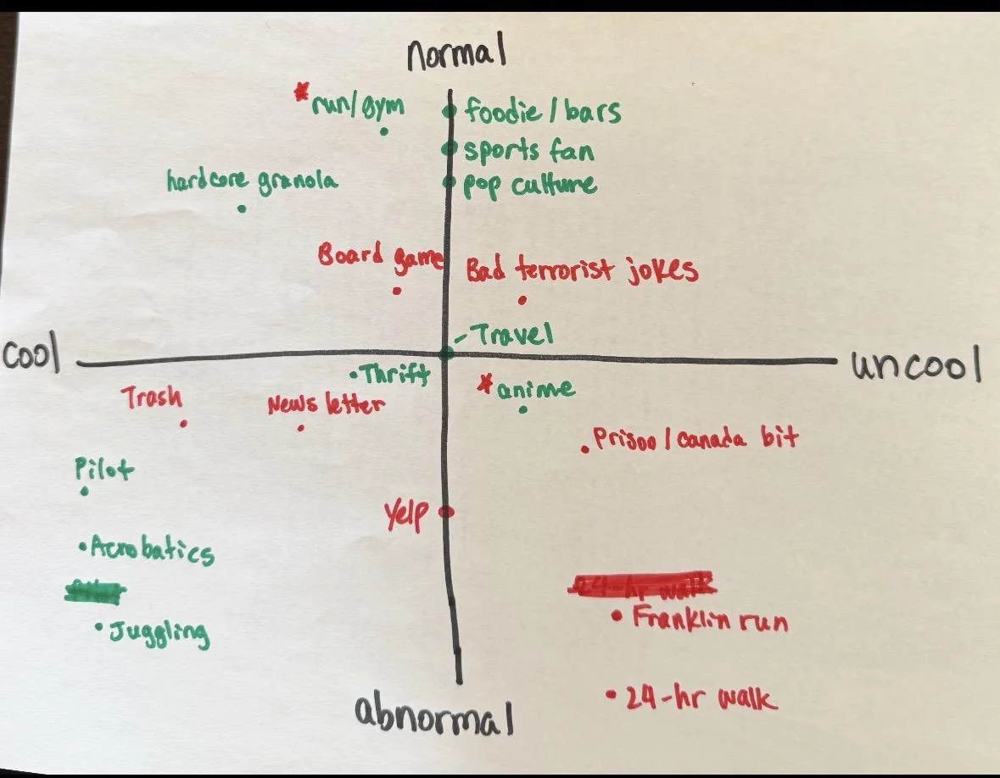
For some more context I’ve been thinking a lot about what kind of person would really be the right fit for me. After some thinking I realize I need a girl who is quirky, high in physical energy and down to do a bunch of walking, and generally more interested then not in doing random nonsense.
I think a good amount of walking is the cross town trail as a rough estimate. If they can’t do that then I think there may be a mismatch in energies. Additionally even if they aren’t receptive to all my bits they shouldn’t grimace either. They should be able to understand why I might at least find it interesting even if they ultimately think it’s more trouble than it’s worth.
From what I’ve been told I’m a highly abnormal person and other abnormal people are more likely to tolerate quirks than normal people. To elaborate, a normal person is someone whose main hobbies are going out, hanging out with friends, pop culture, and restaurants according to the council definition of normal.
On top of that I heard from a friend that “I seem sweet but come off as socially awkward”. After probing a bit more it seems to me some combination of my tone of voice, body language, and facial expressions. I didn’t get a lot of concrete advice here but from what I’ve heard before the way I talk naturally gives off a lack of confidence. I’m told it’s my upwards inflection. It makes it sound like I’m always asking a question even when I’m not. Researching this a bit led me to a phenomenon known as high rising terminal in which declarative sentences end in a rising pitch which makes it sound like I’m always asking a question. I don’t know how much this in particular contributes but it sounds like it doesn’t help.
From what I was told this eats into my weirdness budget from the get go. I find it somewhat amusing that someone socially awkward like me also has more friends than most people but I suppose life do be like that. Personally I would rather spend my weirdness budget on my quirks than these things so I want to see how I can fix them as well. Maybe I should record myself talking and see how I sound.
Alright munchkins thanks for coming with me on this detour that I didn’t really know where else to put. In truth all these things happened through a few days but I figured putting it all here would help with the flow.
Where are we on Wednesday. Oh right work, after being in the proverbial whale for a time just a bit shorter than Job I treated "The Filmmaker” to dinner. He’s moving to New York eminently and I wanted to have a proper 1:1 with him before he heads off to that big concrete jungle across the country.
We had a really nice and heartwarming chat catching each other up on what we had been up to, about our dreams, and me being more excited about him moving; not because I won’t miss him, but I know NYC is gonna be a great place for the things he wants to do next. Not since I was a child have I generally been one to cry but a year nearly came to my eye when I told him I’m really proud not just of him but of all the cool things my friends have done and how I consider you all to be one of the biggest blessings in my life. I don’t want to get too sentimental now because the two year anniversary special is almost upon us and I think I may truly cry writing it but this may be my answer to the Hinge prompt “When was the last time you cried happy tears”. Best of luck to you man I can’t wait to hear about all the cool things you will be up to!
Thursday
After I finished tanking the tokens I went to bar night with “The Philosopher,” “The Twitch Streamer,” “The Mosher,” and “The Mosher’s” parents. His peeked are lovely people and it was fun to talk with them.
Friday
After the algorithms came home to roost I took “The Quant” out to KBBQ. It’s hard to believe this may be one of our last times getting KbBQ like this. The meat was great but unfortunately I was recovering from being a bit under the weather so my appetite definitely wasn’t where it usually is.
We then went on a walk around GGP where we ran into some teenagers asking us if we went to swalloween. I wasn’t sure quite what that is and one of them said “It’s where a bunch of girls swallow guys …” and then he trailed off. He didn’t elaborate much but the implication was clear. We continued walking and heard a bunch of music and people talking leading us to wonder whether this is the storied swalloween in question.
The source of the noise led us to the DeYoung museum. Apparently there was some big party going on there with food trucks and stuff which you needed a ticket to enter; In told the person there that I may not have a ticket but I felt like I was meant to be there. She laughed and unfortunately told me the tickets were $45. Guess I wasn’t meant to be there after all.
We walked back to my place where we got a call from “The Fisherwoman” inviting us to a different Halloween party that a friend of “Happy national crocs day” was hosting. I changed into my Halloween costume and we headed out.
This was my first time debuting my new Halloween costume where I dressed up as Emperor Norton. For those who don’t know, Emperor Norton was a guy from the 19th century who was born in Britain and came to SF where he lost a fortune in bad trade deals on rice. Afterwards he became homeless and declared himself the Emperor of the United States. Heads his own currency, issued a bunch of decrees including the establishment of a bridge going across the Bay which is now called the Bay Bridge.
Also at the party was a friend I know from Midnight runners who happens to be college friends with “Happy national crocs day”.
Saturday
Today I decided to begin my day with … trash pickup! This is my first trash pickup since the 300th. I realized this morning I didn’t really have much planned and the other volunteer opportunities I could do would lead to my clothes getting dirty which didn’t work with my schedule since I needed to be in my Halloween costume shortly after so I figured I may as well do it again. I’m still gonna come less frequently but I can come every now and again.
Today I saw “The Notetaker” who immediately recognized my Emperor Norton costume, “Bleaching to the choir,” “Let me give you a call on the worlds smallest phone,” “The Politician,” and a bunch of other folks who I know but don’t have nicknames for. It was great to catch up with everyone.
From there I went to a cake picnic over by Fort Mason. I saw “The Boxer,” his girlfriends, and her other friends. Unfortunately there wasn’t much in the way of dairy free cake so I took more of a spectator role here. After they left “The Foxy lady” and “Not Misinformed” came by.
I have to give props to “The Foxy lady” she far and way had the best Halloween costume in terms of sheer effort. She dressed up as a cake that she hand made from cardboard, paper mache, and from what she said a couple weeks of blood sweat and tears. You can tell because many people gave compliments on the costume and from what she said on the way to the picnic multiple people asked to take photos either of or with her. She did a couples costume with “Not Misinformed” where “The Foxy lady” was the cake and “Not Misinformed” was Buddy from a show called Cake boss or “the baaws” (that’s supposed to be my transliteration of a New Jersey pronunciation of boss). Naturally you can tell the costume was a real hit at the cake picnic.
Man im hungry right now. That has nothing to do with what happened at the time of the cake picnic but as im writing this a day later I really wanna eat something.
Anyway where were we? Oh right, after hanging out with “The Foxy lady” and “Not Misinformed” I went to the library to print out some Norton bucks(did I mention Empeor Norton made his own currency? Maybe I did but here it is anyway) to really finish my costume. Then I went to Emperor Nortons Boozeland to see if I could get a free drink. Immediately when I walked in they recognized me and said “Our emperor has returned!” I talked with the bar tender there a while and got a pineapple juice which I paid for with one of my Norton bucks.
The owner of the bar came in and I talked with him for a bit too. Naturally he too immediately recognized me and was impressed by the costume; especially after I told him I had to source multiple things to put it together.
Oh yeah I never did show a picture of me in the costume so what better place than at the man’s bars.
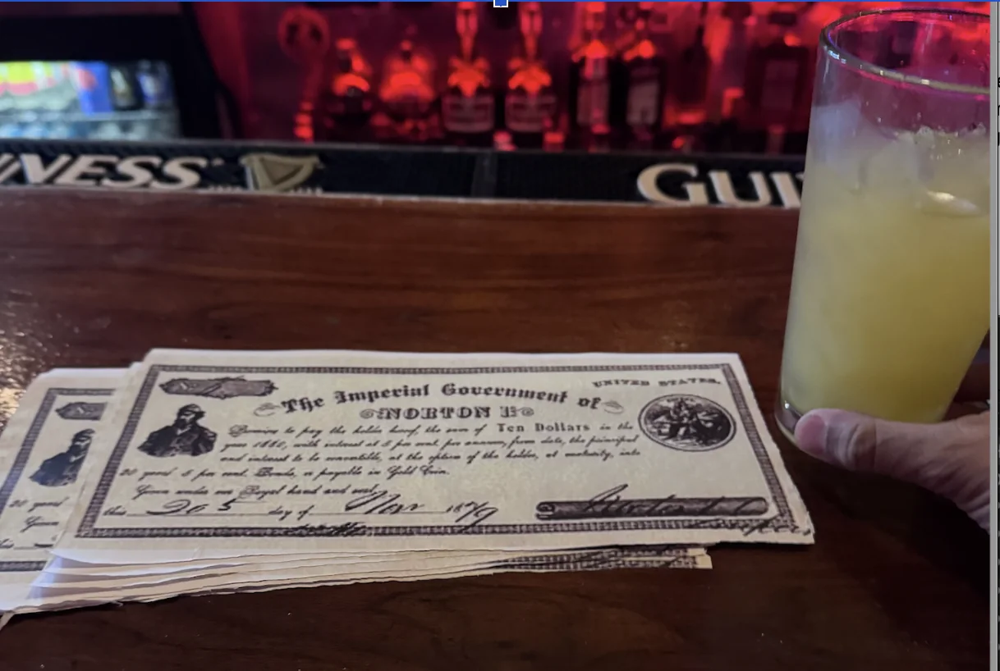
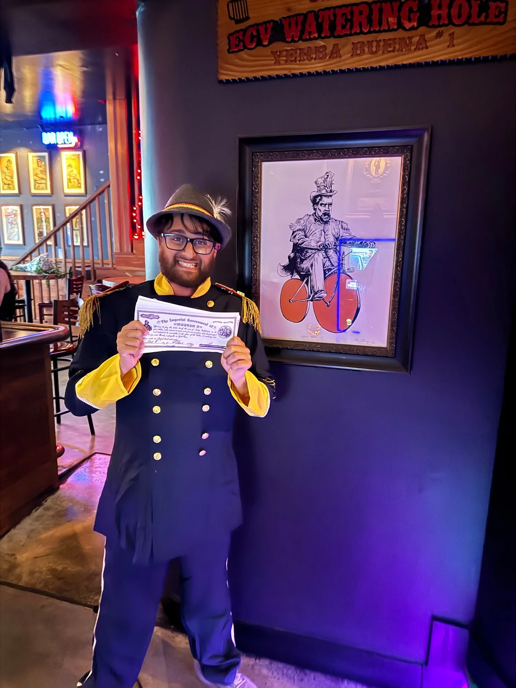
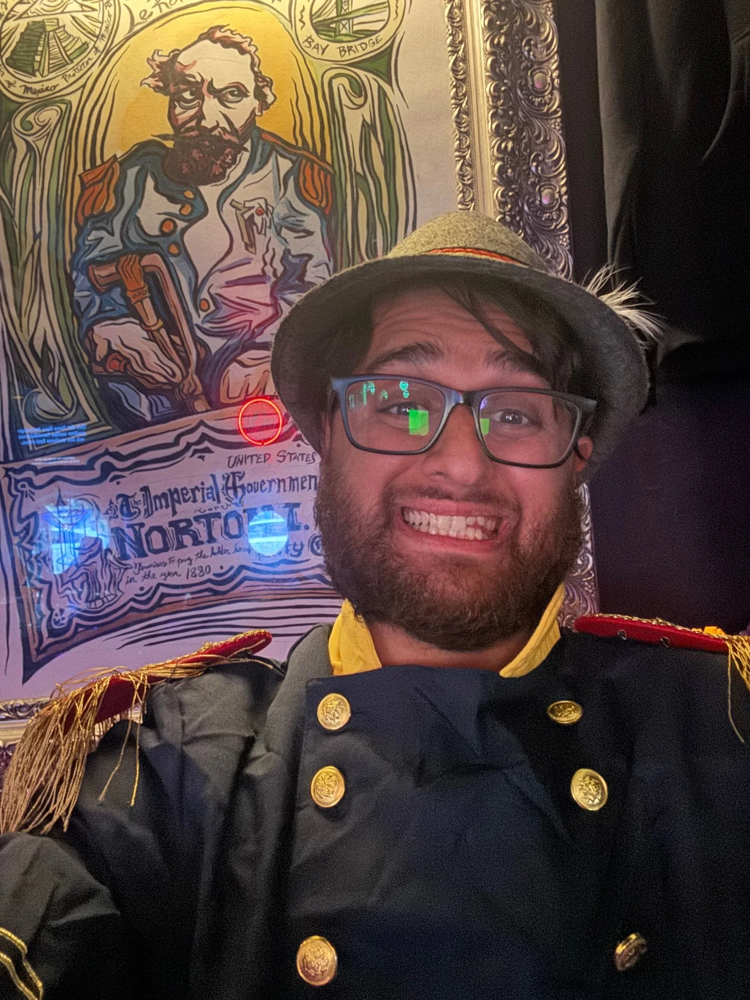
After claiming my imperial beverage I went to a Halloween party hosted by “The Filmmaker”. Also there was “The Raja of Rhythm,” “John Wick,” “The Yogi,” “Mr. Socksessful” and a bunch of others. This may well be the last time I see “The Filmmaker” for a while so I would like to officially bid you the old Trash Tales sayonara. We had our deeper conversation earlier this week so today we just danced it out and got down to some bhangra beats. The playlist was a mixture of classical club music with bhangra beats to create something quite interesting.
As I left that party I immediately heard shouting that the Valkyries won the WNBA series. I bet wherever he is that guy from Mission Run Club who is really into basketball was having a real Christmas in October moment. Even I admit it was kinda cute when a kid was shouting it out.
Later I went to a party hosted by “This little piggie didn’t go to the slaughterhouse” also featuring “Mr. Socksessful,” “The Yogi,” “Not Misinformed,” and “The Foxy lady”. While there 3 separate people recognized my Emperor Norton costume which was amazing! One of the guys lives on a street named after him which was really funny, and they were delighted when I gave them some Norton bucks that I printed out.
I ended the night with dancoween which was pretty solid right up until some ambulances drove by which told me the party was likely ending. I ran into some other people from the last party and we chatted for a while. They in turn ran into some people they knew and a couple of them gave me a surprising dressing down of my costume saying they thought my base outfit was more Civil War or Revolutionary and that the small German bands around my hat gave off more Oktoberfest vibes than Emperor Norton. Also the fact that I had my headphones around my neck didn’t really help either but to be fair everyone who recognized the costume did so anyway so I don’t think it mattered all that much but I found it amusing that we got into a 10 minute debate about how I could improve my costume.
I figured transit back home on Halloween night would be cursed so I took the ol lamorofeeti for a spin. I stopped by a 24 hour cafe called Corgi Cafe to get a matcha latte only. For anyone who doesn’t know Corgi AI is an insurance AI company which made some rounds on tech twitter for being in the office 7 days a week (yes you read that right), and then deciding to open up a 24 hour cafe throughout the city for people to work at and get drinks. On the one hand I am happy to see more late night establishments that aren’t bars but damn why did it have to be this. I have to admit the matcha latte was pretty reasonable though.
Sunday
The day begins with me doing a food kitchen volunteering activity over in the Tenderloin. I heard about this for a while and on a whim I decided to check it out at 7 in the morning. The way this works is you prepare the kitchen for serving a bunch of meals to needy folks, bussing during the event, and then doing a bit of cleanup afterwards.
I got there right around 7 and for the first half hour we were doing a bunch of stuff to get ready for the event including getting all the cups ready (which included putting napkins, a fork, and 3 sugar packets in each one), filling all the waters and milks, and cleaning the tables.
Around 7:30 I was on front duty which meant taking any finished plates, wiping down tables, refilling, and helping people if they wanted more things.
Once that happened I found myself really getting into a flow and quite enjoying the process. I felt like I was in the zone, constantly prowling the kitchen looking for a dirty plate, a table to clean, or something to do and time actually passed by surprisingly quickly.
Unlike trash pickup this wasn’t a very social volunteer opportunity as the constant stream of tasks didn’t leave a lot of room for socializing, and one thing I learned is that the post activity hang really solidifies a lot of the friendships. I made some small talk with one of the other volunteers but he didn’t seem particularly receptive, answering my question somewhat curtly.
The whole thing did feel more like a second job as opposed to a social hangout but thats ok. I realize trash pickup is definitely on the more social side of volunteering and I think this was quite interesting in its own way.
For the most part the people getting the meals were quite nice. I struck up a small conversation with one of the guys and he was definitely more affable than the other volunteer.
There was one person who was somewhat belligerent and did make me glad we had the guy from the safety team there but that was more of a one off case and in general everyone was quite nice.
Around 9:10 or so the kitchen closed and after a few minutes of final cleanup I headed out. I decided to compromise a bit on the new activity spectrum and try the Nob Hill trash pickup afterwards. It’s not really a new activity but it’s at least a different area of the city and I can meet some new people which was fun. The one downside of not going to the Mission pickup is I missed an opportunity to see “The Philosopher” who was rocking a spiffy new haircut which from what I saw was quite splendiferous with the ability to melt souls and capture the imagination. I’ll have to see it in person next week though.
The pickup itself was pretty solid. For this pickup they had everyone go in pairs as opposed to making your own groups which I’m not entirely sure I like. I think only having one person can sometimes be a bit awkward if you don’t vibe well but my guy was good. We had a good chat for most of it, it wasn’t quite as good as the last time I had a 1:1 trash pickup with a new person wherein I met “The Shadow Brigade” but I don’t think I can hold most new people I meet to “The Shadow Brigade” standards of excellence.
The post pickup perks were solid, we got either food or drink at a cafe hosting us. After the pickup some of us talked at the cafe for a while and me and another guy resolved to do an open mic together. He said he really wanted to try standup comedy and I had mentioned I had done it before so we called it his entrance and my return. Once the two of us settle on one we’re going to both perform. If any of y’all are interested in coming let me know! I’m hoping for something November 10 but I currently wait to hear from my partner in crime. Also at the pickup I found a girl who was pretty cute and just may be quirky enough for me. Obviously I don’t know her super well but she was wearing a Costco hoodie and she sings in a Latin mass choir which definitely signals some unusual interests. I don’t know if this will go anywhere but now I do want to get to know this girl better and see if anything could happen.
I then went to the Panhandle to practice my juggling. I bought some juggling balls and am trying to actually do it more now. I started with being able to pass one ball consistently from one hand to the other in an arc. I’m now at the point where I can do it pretty consistently by not moving too much and looking with my eyes to see when the ball is at its peak and catching it. I can even do one ball while walking which probably isn’t impressive in the grand scheme of things but it makes me happy. I’m now trying to do two balls which I can sorta do but less consistently and my arcs aren’t as good. From what I saw the trick is when the first ball is at or near the peak you throw the second one up. Part of the problem is my arcs aren’t always the most consistent which can lead to variation in my success rate. From what I understand this will get better with practice but I don’t yet have a clear path to getting there but carrying juggling balls around and playing with them while on the go has proven to be fun so there is that at least. And I like to think it suits my personality too.
While I was in the Panhandle I saw some guy giving a tour so I decided to hop in an join them. I have no idea what kind of tour it was but it felt like the more interesting road to go down so I did. The guy talked about how at one point there was going to be a highway straight through the Panhandle to Marin (he asked if anyone was from Marin and I was the only one who answered yes) and said that because of the efforts of some folks who I missed we have a more walkable city than we otherwise would have. Thanks unnamed folks! He also mentioned that one of the theories of tie-die origin was because some middle class kids moved to San Francisco and their parents gave them white button down shirts to help them look professional at their jobs but they didn’t like that and tie-died them to make them look cooler.
Also I learned that the term hippie derived from the term hipster and was originally meant as an insult until they rolled with it and embraced the term. There was a separate branch called the beatniks which emerged in the 1940s and while they had a shared sense of antimaterialism they weren’t as politically engaged with things as the Civil Rights Movement as Hippies were. While Hippies were obviously very active in Haight Ashbury, Beatniks were more prominent over in North Beach. Back at the start of the hippie movement there was a band called The Warlocks that would play a lot while the entire audience was high on LSD. Per the tour guide nobody cared if they were in tune or what everyone was just dancing around. The band would then go on to evolve and rename themselves to one that more of you may be familiar with called The Grateful Dead.
At this point unfortunately I got hungry and decided to leave the tour and continue to practice juggling.
Personal training progress for the week
The dot plots below show every exercise logged through 10/27/2026; later dates are excluded. The x-axis is time, the y-axis is logged weight, and dot size represents reps or logged time. Bodyweight sets appear on the BW baseline.
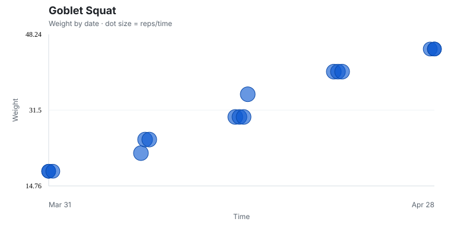
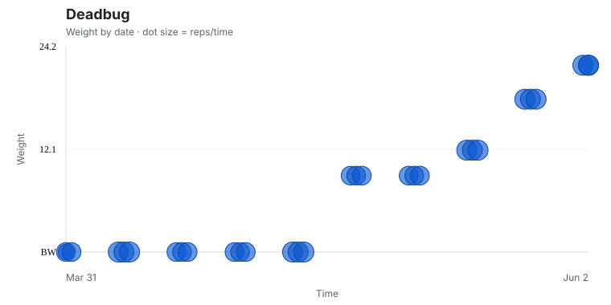


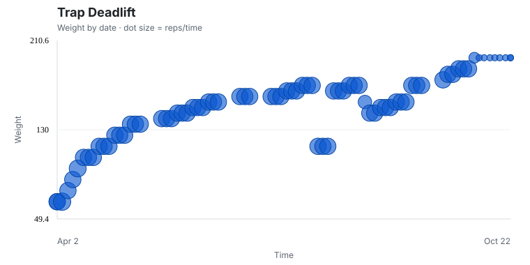


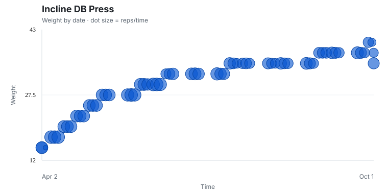


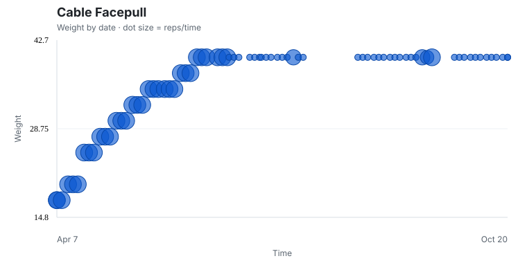
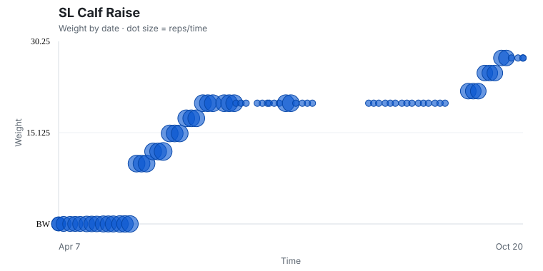
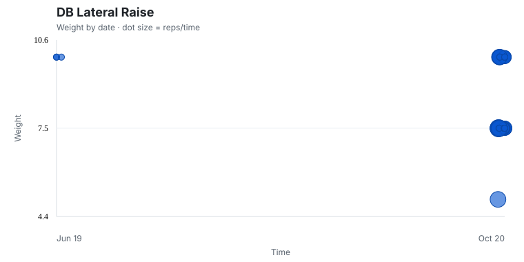
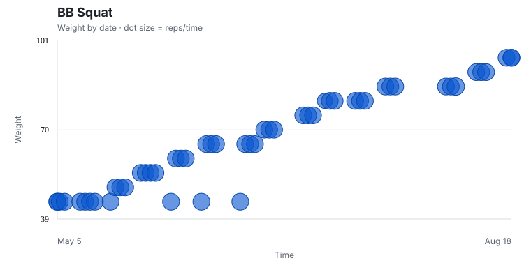


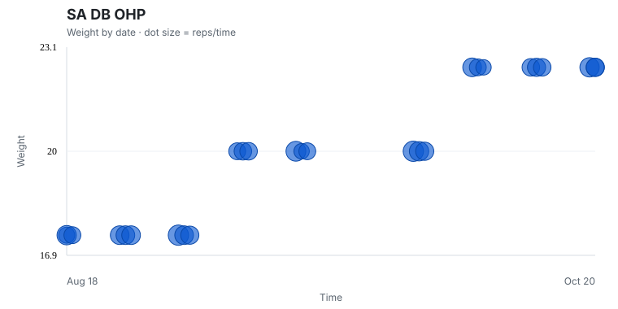


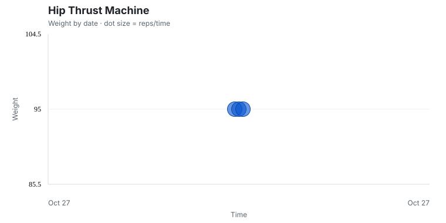